Wallpapers
Desktop stills (70)
aphrody-dark-mesh / 7.14:1aphrody-dark-aurora / 4.88:1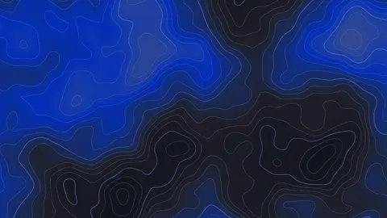
aphrody-dark-topo / 4.6:1aphrody-dark-stars / 4.6:1aphrody-dark-facets / 5.71:1aphrody-light-mesh / 10.09:1aphrody-light-aurora / 15.67:1aphrody-light-topo / 4.6:1aphrody-light-stars / 7.17:1aphrody-light-facets / 9.05:1workshop-dark-mesh / 6.36:1workshop-dark-aurora / 4.6:1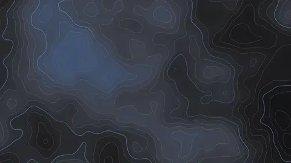
workshop-dark-topo / 4.6:1workshop-dark-stars / 4.6:1workshop-dark-facets / 6.73:1workshop-light-mesh / 10.27:1workshop-light-aurora / 15.68:1workshop-light-topo / 4.6:1workshop-light-stars / 7.12:1workshop-light-facets / 8.68:1night-dark-mesh / 6.17:1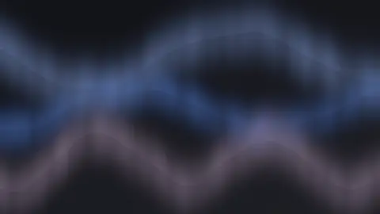
night-dark-aurora / 4.6:1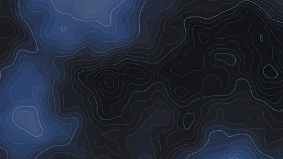
night-dark-topo / 4.6:1night-dark-stars / 4.6:1night-dark-facets / 5.95:1night-light-mesh / 10.08:1night-light-aurora / 15.86:1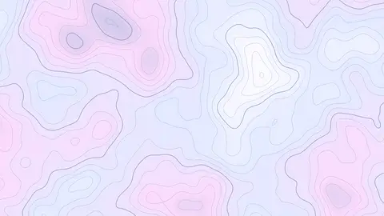
night-light-topo / 4.74:1night-light-stars / 7.77:1night-light-facets / 10.33:1frost-dark-mesh / 6.91:1frost-dark-aurora / 4.77:1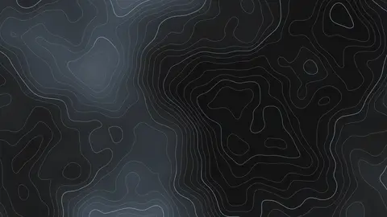
frost-dark-topo / 4.6:1frost-dark-stars / 4.6:1frost-dark-facets / 6.13:1frost-light-mesh / 10.4:1frost-light-aurora / 15.31:1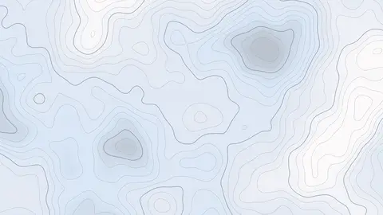
frost-light-topo / 4.6:1frost-light-stars / 7.29:1frost-light-facets / 10.57:1ember-dark-mesh / 5.61:1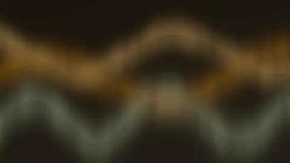
ember-dark-aurora / 4.6:1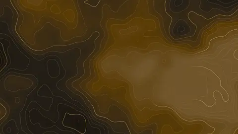
ember-dark-topo / 4.6:1ember-dark-stars / 4.6:1ember-dark-facets / 7:1ember-light-mesh / 10.56:1ember-light-aurora / 15.91:1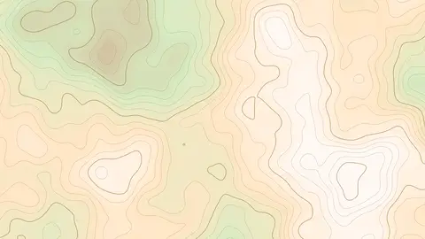
ember-light-topo / 4.75:1ember-light-stars / 7.6:1ember-light-facets / 9.01:1dawn-dark-mesh / 5.54:1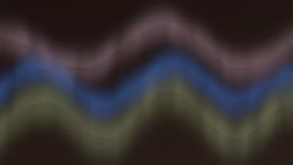
dawn-dark-aurora / 5.33:1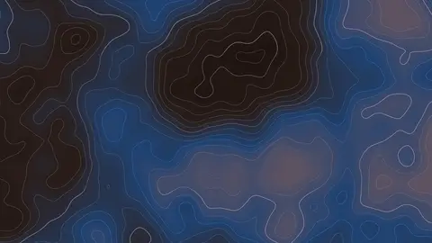
dawn-dark-topo / 4.6:1dawn-dark-stars / 4.6:1dawn-dark-facets / 5.67:1dawn-light-mesh / 10.83:1dawn-light-aurora / 15.83:1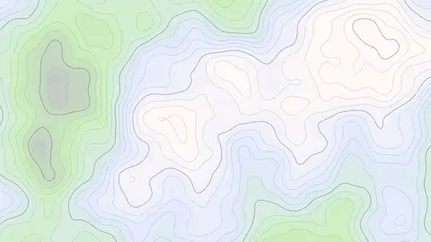
dawn-light-topo / 4.6:1dawn-light-stars / 6.7:1dawn-light-facets / 10.55:1mono-dark-mesh / 4.6:1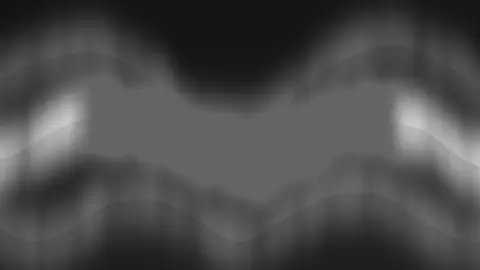
mono-dark-aurora / 4.6:1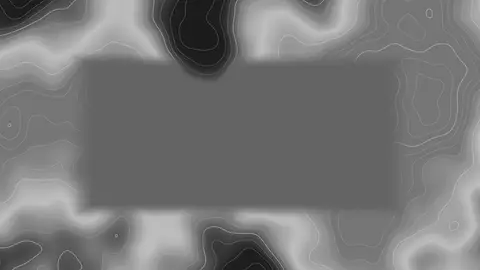
mono-dark-topo / 4.6:1mono-dark-stars / 4.6:1mono-dark-facets / 4.6:1mono-light-mesh / 6.25:1mono-light-aurora / 15.46:1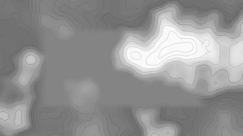
mono-light-topo / 4.6:1mono-light-stars / 4.6:1mono-light-facets / 4.6:1 Mobile stills
aphrody-dark-meshaphrody-dark-aurora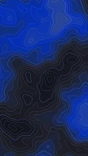
aphrody-dark-topoaphrody-dark-starsaphrody-dark-facetsworkshop-dark-meshworkshop-dark-aurora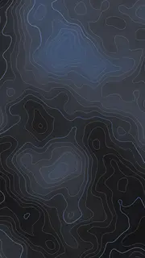
workshop-dark-topoworkshop-dark-starsworkshop-dark-facetsnight-dark-meshnight-dark-aurora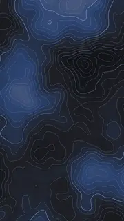
night-dark-toponight-dark-starsnight-dark-facetsfrost-dark-meshfrost-dark-aurora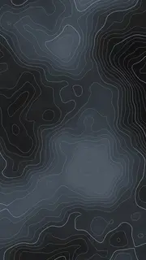
frost-dark-topofrost-dark-starsfrost-dark-facetsember-dark-meshember-dark-aurora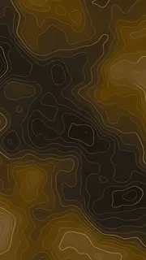
ember-dark-topoember-dark-starsember-dark-facetsdawn-dark-meshdawn-dark-aurora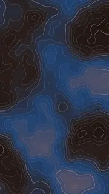
dawn-dark-topodawn-dark-starsdawn-dark-facetsmono-dark-mesh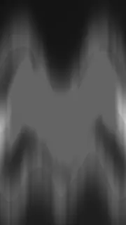
mono-dark-aurora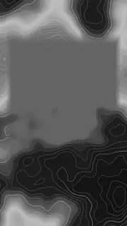
mono-dark-topomono-dark-starsmono-dark-facets Animated GIF
aphrody-dark-mesh.gifdawn-dark-mesh.gifember-dark-mesh.giffrost-dark-mesh.gifmono-dark-mesh.gifnight-dark-mesh.gifworkshop-dark-mesh.gif
SVG backgrounds and animated SVG
aphrody-dark-mesh-smil.svgaphrody-dark-stars.svgaphrody-dark-waves.svgaphrody-light-mesh-smil.svgaphrody-light-stars.svgaphrody-light-waves.svgaphrody-dark-facets.svgaphrody-dark-topo.svgaphrody-light-facets.svg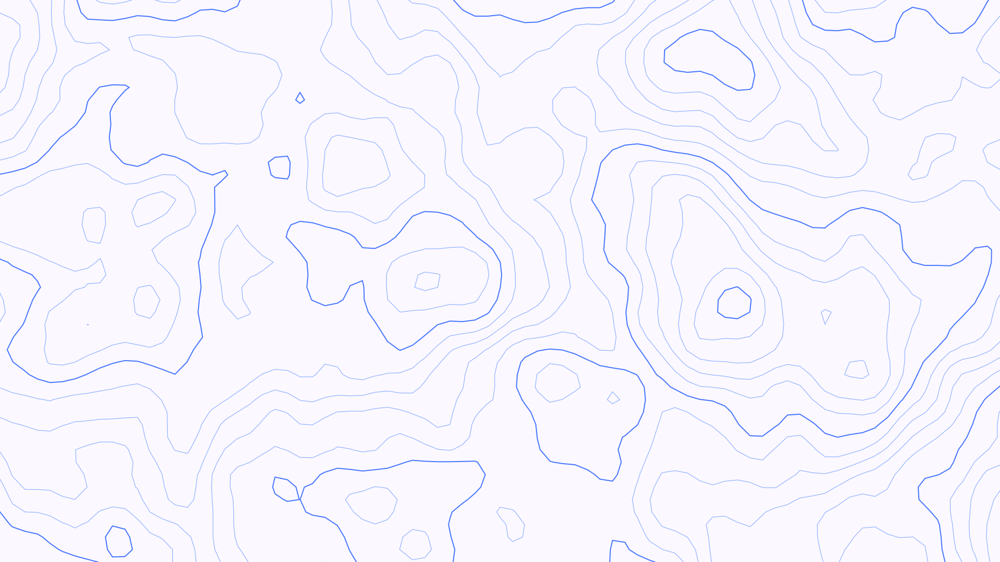
aphrody-light-topo.svgaphrody-dark-waves.svgaphrody-light-waves.svg Spinners
arc.svgbars.svgdots.svgorbit.svgpulse.svgring.svg
Patterns
ember-dark-diagonal.svgember-dark-dots.svgember-dark-grid.svgember-dark-hex.svgember-dark-plus.svgember-dark-rings.svgember-dark-triangles.svgember-dark-waves.svg Loading, icons, OG
aphrody loadingaphrody og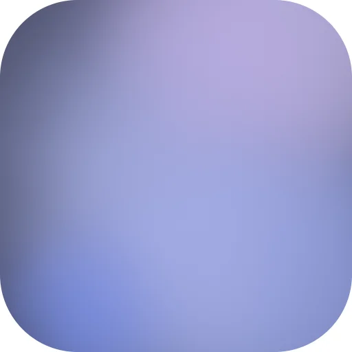
aphrody tilent loading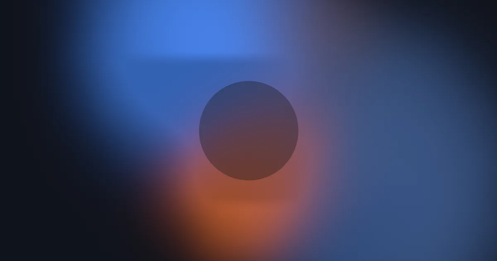
nt og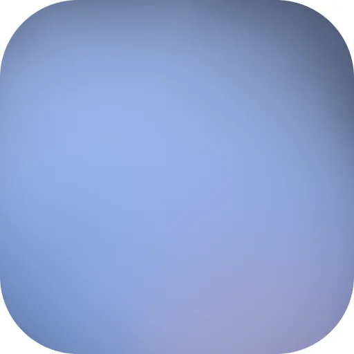
nt tile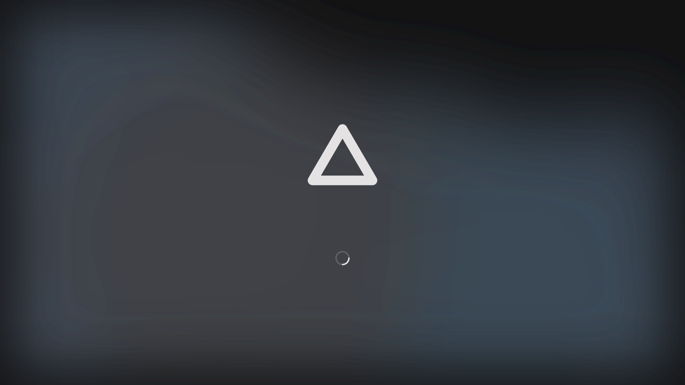
yolo loading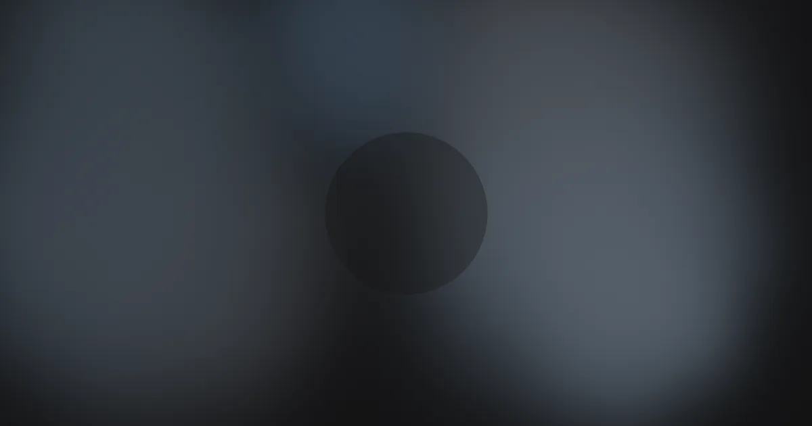
yolo ogyolo tile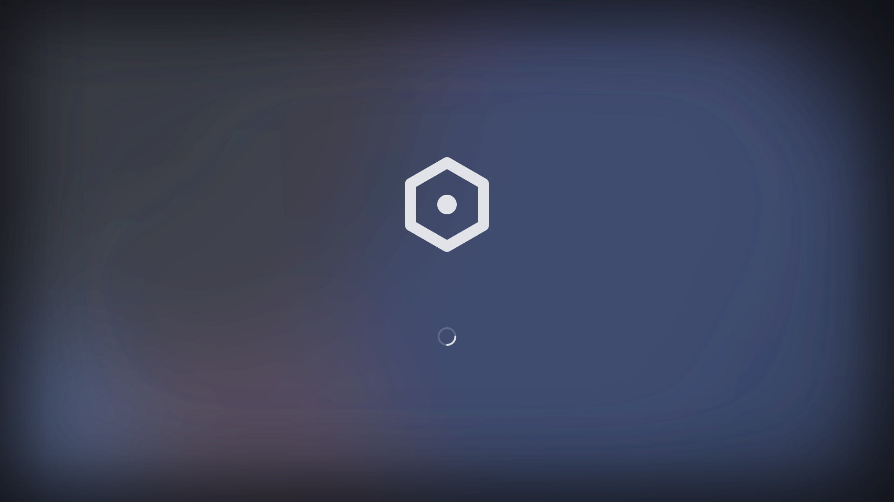
game loadinggame og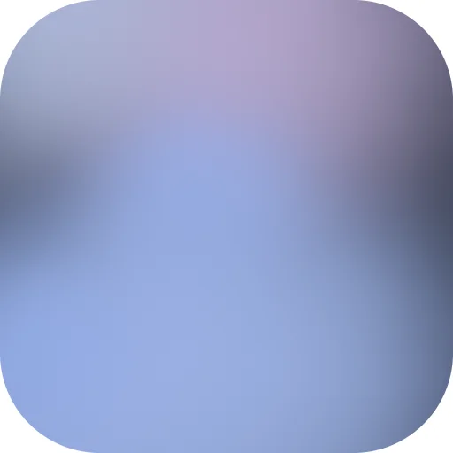
game tile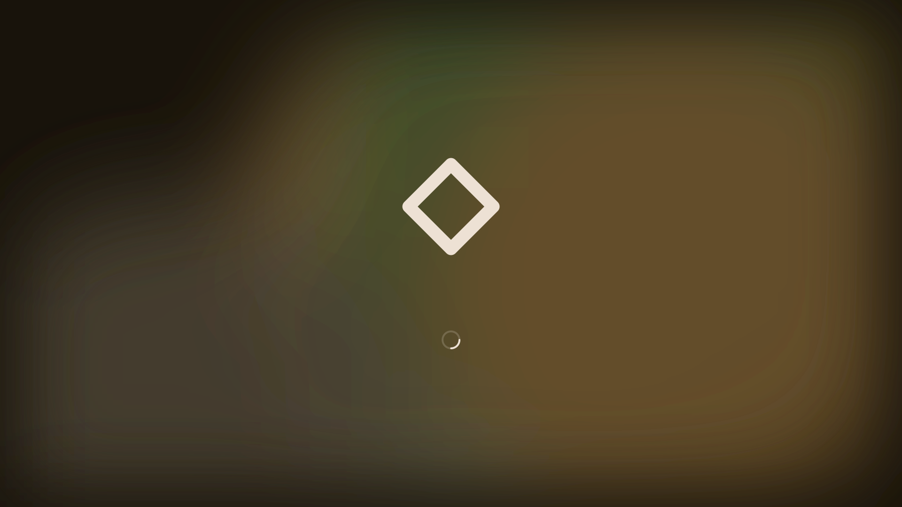
shenron loading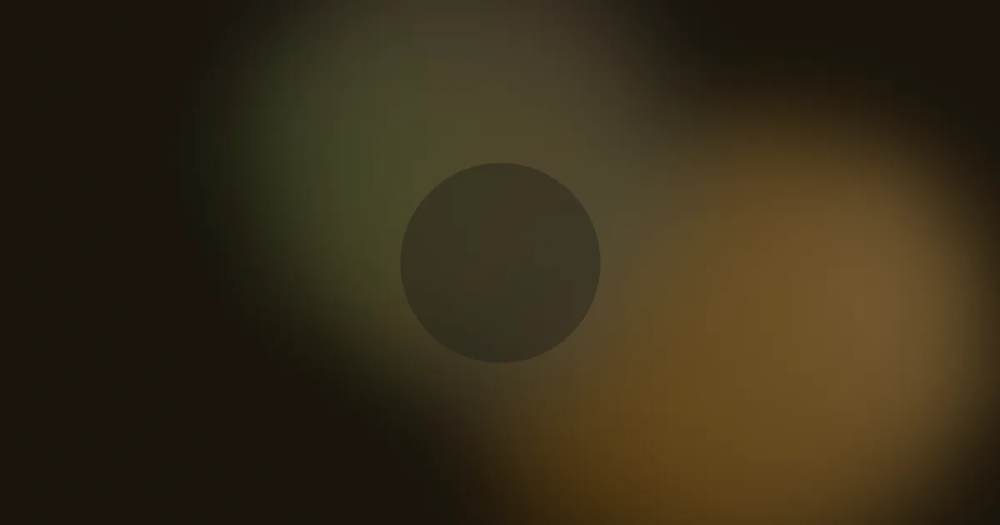
shenron ogshenron tile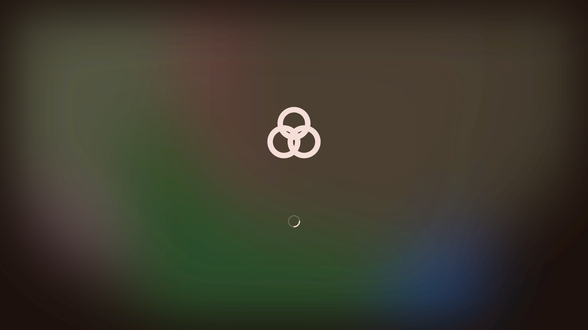
rosegriffon loading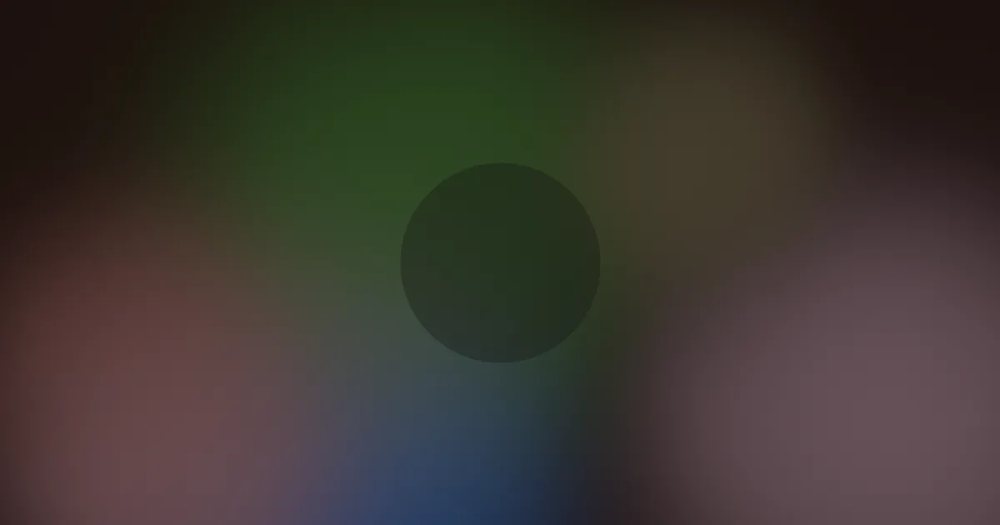
rosegriffon og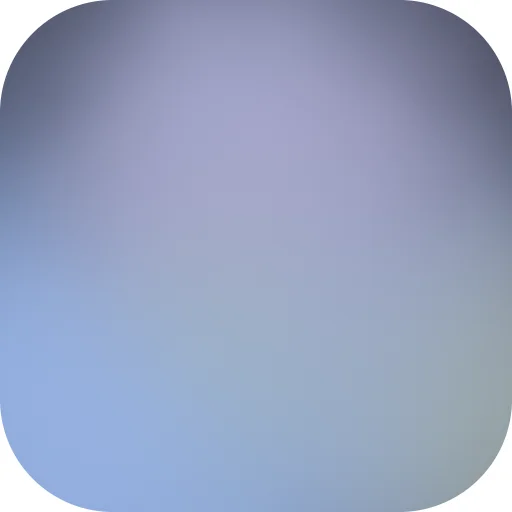
rosegriffon tile Textures
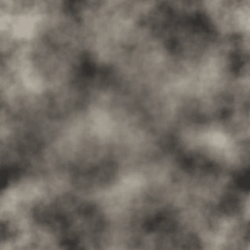
rock albedo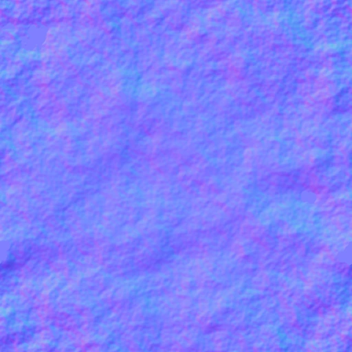
rock normal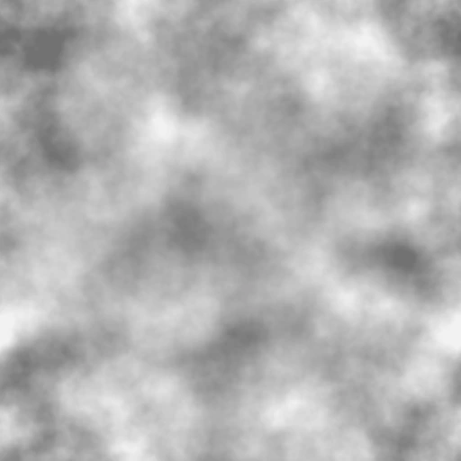
rock roughness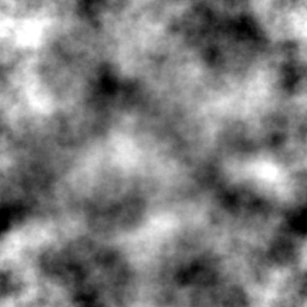
rock height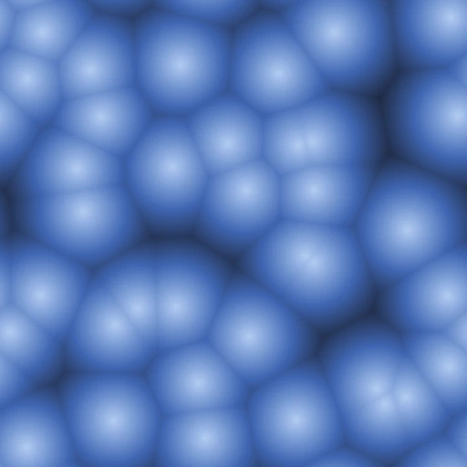
cells albedo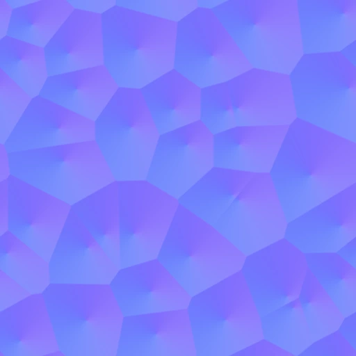
cells normal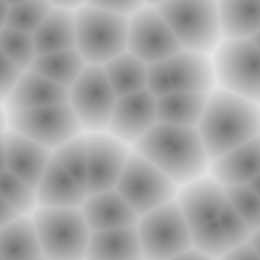
cells roughness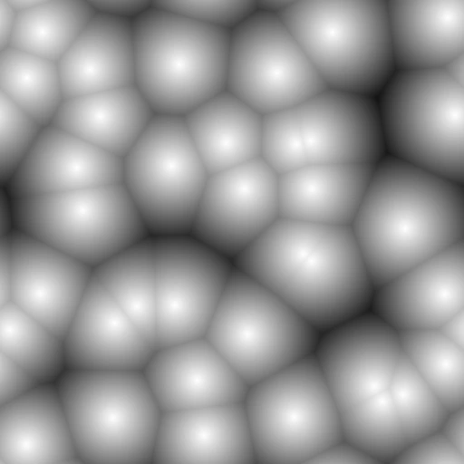
cells heightweave albedoweave normalweave roughnessweave height